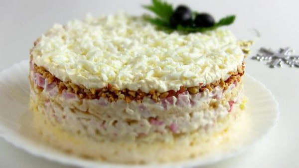

Салат Снежная Королева

Приготовление:
1. Замариновать мелко нарезанную луковицу в маринаде из воды, уксуса, соли и сахара. Через 15 минут маринад слить.
2. Нарезать небольшим кубиком крабовые палочки и ветчину.
3. Сварить куриные яйца, отделить белки от желтков. Белки необходимо натереть на крупной терке.
4. Желтки натереть отдельно, на мелкой терке.
5. Крабовые палочки, ветчину, тёртые желтки перемешать с майонезом.
6. Выложить салат слоями. Можно воспользоваться разъемной формой для выпечки, чтобы салат хорошо держал форму.
7. Первый слой салата – натертые плавленые сырки (если их подержать в морозильной камере час или два, они будут легче натираться); натертые сырки смазываем майонезом.
8. Следующий слой – маринованный лук, выложить половину крабовых палочек, ветчины, желтков с майонезом.
9. На крабовые палочки выкладываем натертое на крупной терке яблоко без кожуры.
10. Сверху на яблоки выложить оставшуюся часть крабовых палочек, ветчины и желтков, Дальше – измельченный жареный арахис. Натертые на крупной терке белки разделяем на две части. Одну часть смешиваем с майонезом, а остальные белки используем чтобы посыпать салат.